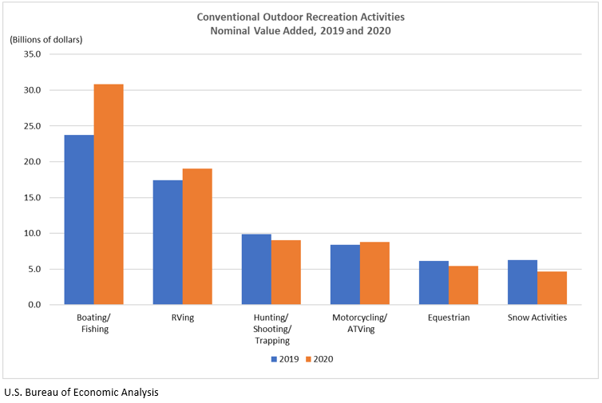

Overview
Purpose
The purpose of this website is to direct the users to the White River Rafting services in a intuitive and simple manner. In this website, the users will find the information they need, feel excited and encouraged to try Rafting in the near future.
Business revenue will increase giving customers more information they can find through the webpage, thus encouraging them towards booking. The business will spending less time and money to physical information posting and advertisement.
In the past years outdoor activities has shown great potentials in growth. In 2020, the outdoor recreation economy was accounted for $374.3 billion dollars of the nations' GDP(1.8% of total GDP), with the largest activity being Boating and fishing accounting for $30.8 billion dollars. This is a $6 billion dollar increase from 2019. This shows that the people are greatly intrested in outdoors activities, especially boating related activities. They need a website to find the information for this service!
Audience
Age range: All ages
Age emphasis: 18-25
Group emphasis: College Friends
Devices: Smartphones, Tablets, PC
The audience for the website is all ages, but with a specific emphasis in 18-25 College Students around the local area. They are always looking for new things to do with their friends, and desparately want a breather from their studies. We provide the adventure they are looking for. Our audience will primarily access through their smartphone devices. We encourage through color choices and web design for the early to mid-20's students to plan a group event.
Branding
Website Logo

Style Guide
Color Palette
Palette URL:
https://coolors.co/164365-7bc5d6-c1e4ec-ebbab9-e5d1d0| Primary | Secondary | Accent 1 | Accent 2 | Accent 3 |
|---|---|---|---|---|
| [#164365] | [#7BC5D6] | [#C1E4EC] | [#EBBAB9] | [#E5D1D0] |
Typography
Heading Font: IBM Plex Sans
Paragraph Font: Roboto Condensed
Normal paragraph example
The best Whitewater Rafting in Colorado, White Water Rafting Company offers rafting on the Colorado and Roaring Fork Rivers in Glenwood Springs. Since 1974, we have been family owned and operated, rafting the Shoshone section of Glenwood Canyon and beyond.
Colored paragraph example
Trips vary from mild and great for families, to trips exclusively for physically fit and experienced rafters. No matter what type of river adventures you are seeking, White Water Rafting Company can make it happen for you.
Navigation
Site Map
Wireframes
Home